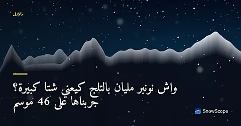

تقارير التلج · مناطق التلج
تقارير يومية ديال التلج للي كيتزلجو: فين كاين التلج، شنو جاي، وفين تمشي تتزلج، من الخريطة ديال التلج ديال SnowScope ومحطات القياس. كل رقم جاي من المعطيات ديال داك النهار.
السبت 14 نونبر 2026
الثلاثاء 10 نونبر 2026

مناطق التلج · 10 نونبرواش نونبر مليان بالتلج كيعني شتا كبيرة؟ جربناها على 46 موسم
قارنّا التلج اللي كاين نهار 10 نونبر مع أكبر علو ديال التلج فكل موسم، ف 46 محطة ديال التزلج وعلى 46 موسم. البداية بالتلج كتعاون، ولكن أقل من داكشي اللي كيتخيلو بزاف ديال المتزلجين.

مناطق التلج · 10 نونبرالميلان والانهيارات الثلجية: شنو كتعني بالصح 30° و35° و40° فالجبل
خريطة ديال الميلان فـLes Grands Montets وسبع محطات تزلج أخرى كتبين شحال من الأرض كتفوت 30° و35° و40°، وعلاش هاد الحد مهم للانهيارات الثلجية.
الاثنين 9 نونبر 2026

الثلاثاء 3 نونبر 2026
SnowScope فالتيليفون ديالكالتلج ديال كل محطة، التنبيهات ديال التلج الطري والخريطة 3D، فابور.
حمّل التطبيق